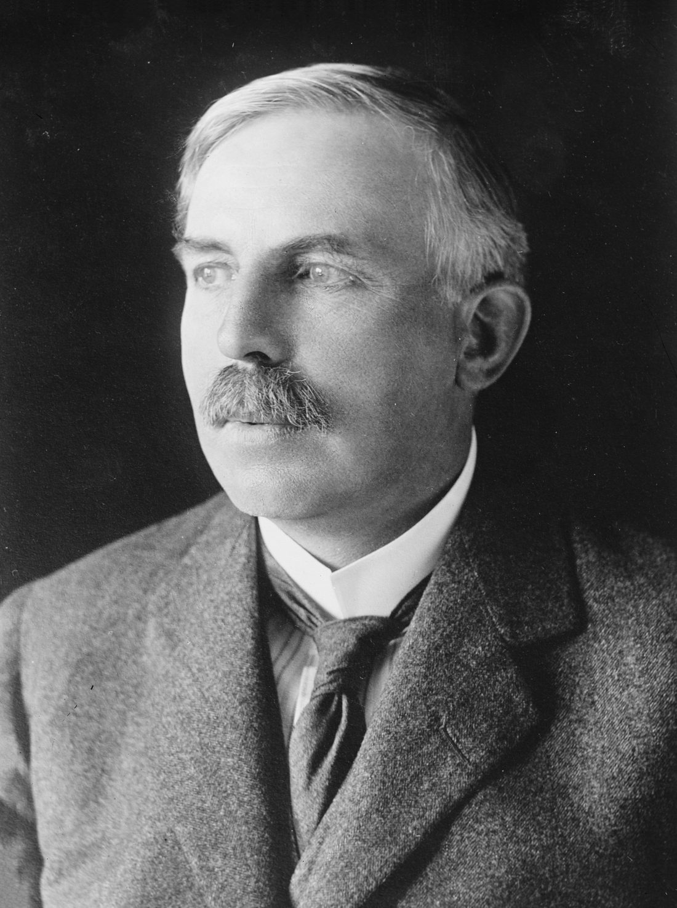
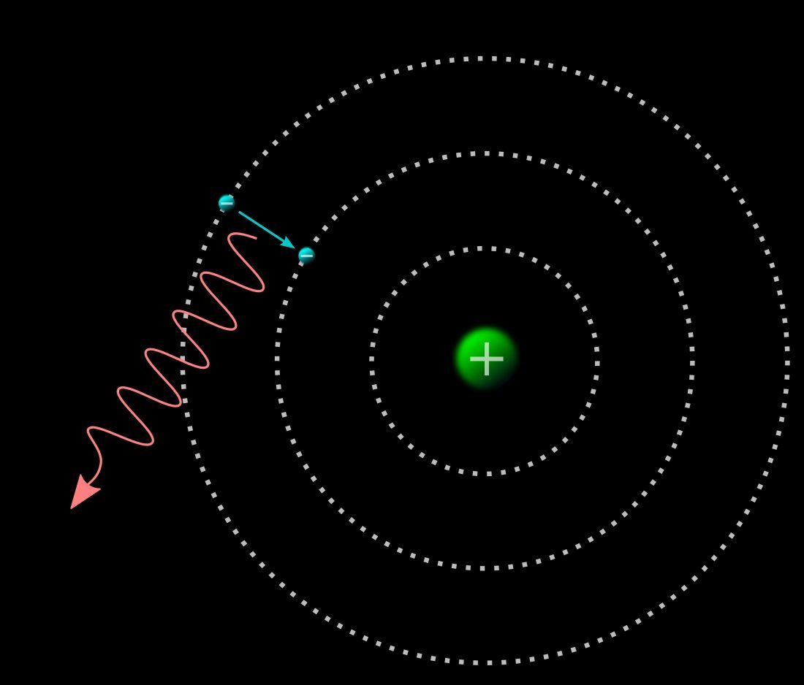
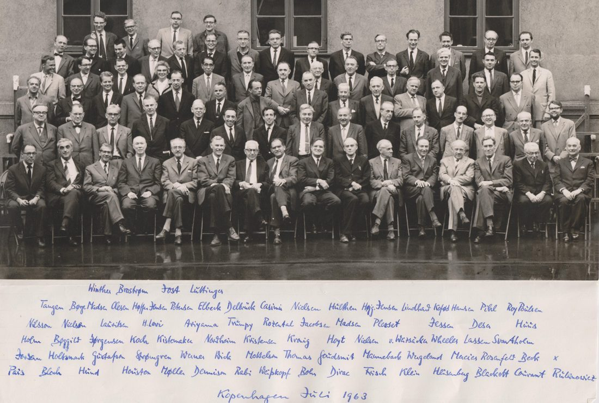
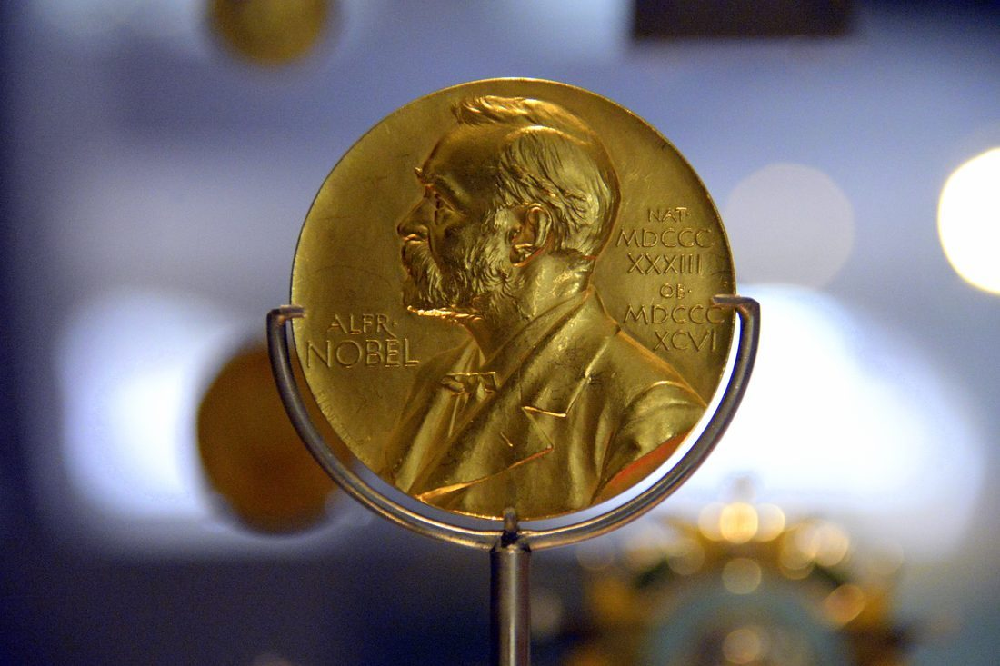
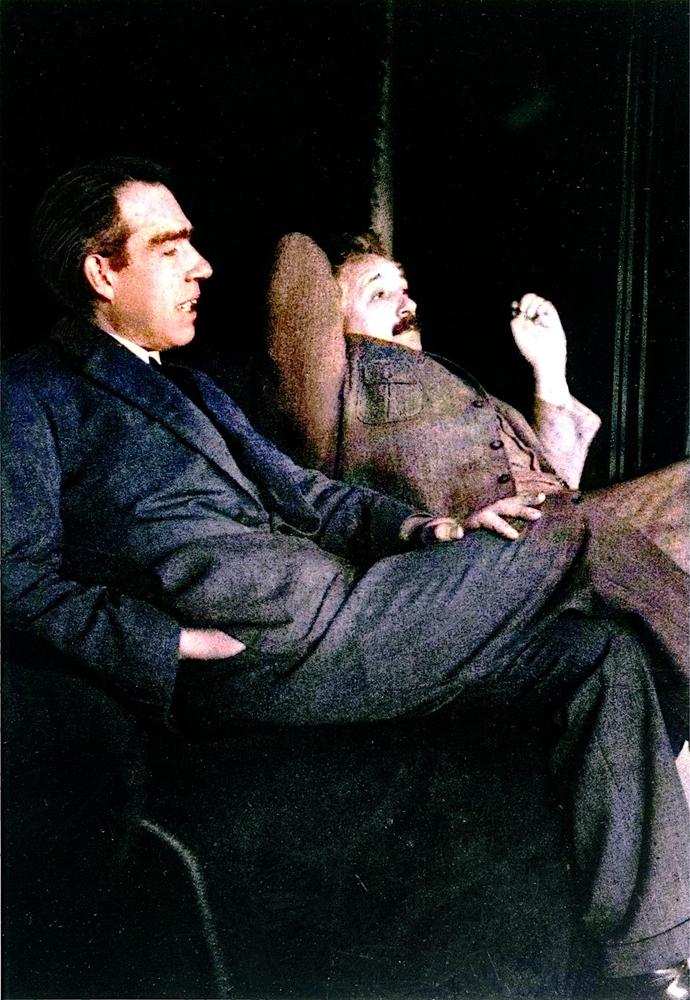
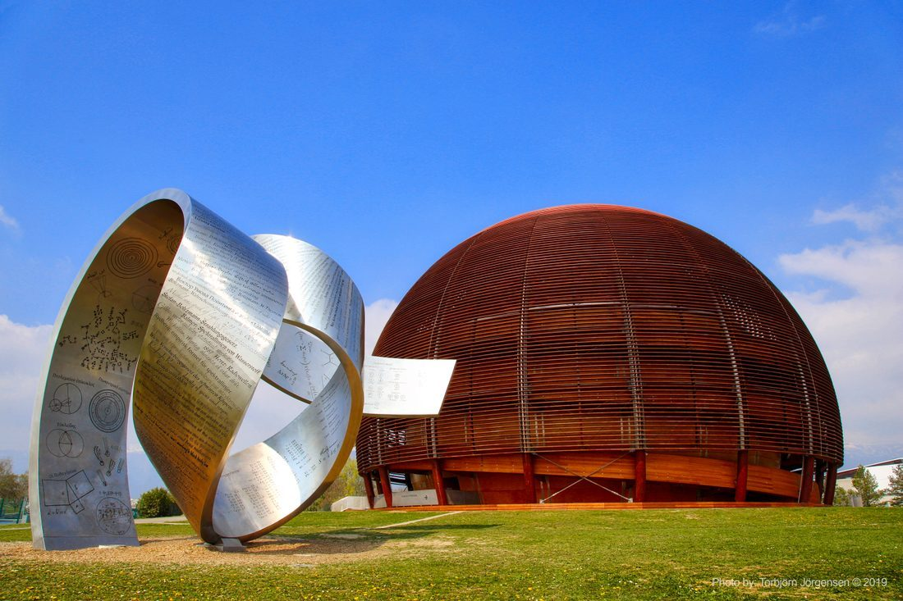

1885
生于哥本哈根

10 月 7 日，玻尔出生。他后来成为丹麦乃至世界物理的标志性人物。
1911
博士与卢瑟福

玻尔获博士学位后赴英国，在卢瑟福手下工作，开始思考原子的结构。
1913
玻尔模型

他发表三篇论文提出原子模型：定态、量子化轨道、跃迁发光，成功解释氢光谱。
1921
哥本哈根研究所

他创立理论物理研究所，海森堡、泡利、狄拉克等在此工作，哥本哈根学派成形。
1922
诺贝尔物理奖

因原子结构及辐射研究获诺贝尔物理奖。
1927
互补原理

在索尔维会议上提出互补原理，并开启与爱因斯坦关于量子力学的长期论战。
1930
与爱因斯坦论战
在历次索尔维会议中，玻尔与爱因斯坦反复交锋，定义了现代物理的哲学边界。
1943
逃离与曼哈顿
纳粹占领丹麦后，玻尔逃往瑞典、英国，后参与美国的原子弹研究。
1952
推动 CERN

战后他呼吁核研究的国际开放合作，是欧洲核子研究中心（CERN）的精神推手之一。
1962
辞世
11 月 18 日，玻尔在哥本哈根逝世，留下原子模型、互补原理与一整个学派。